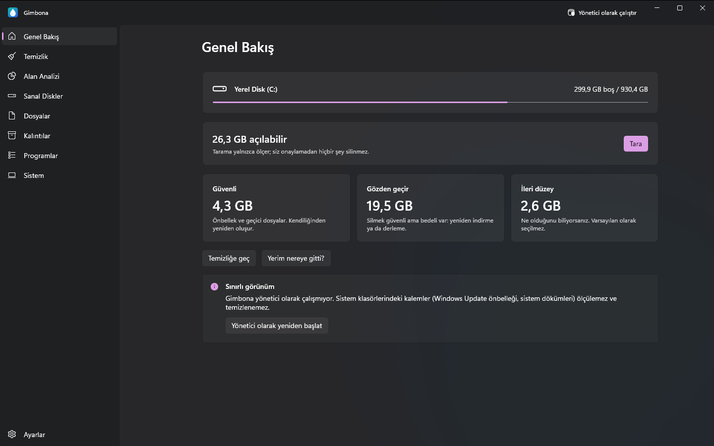
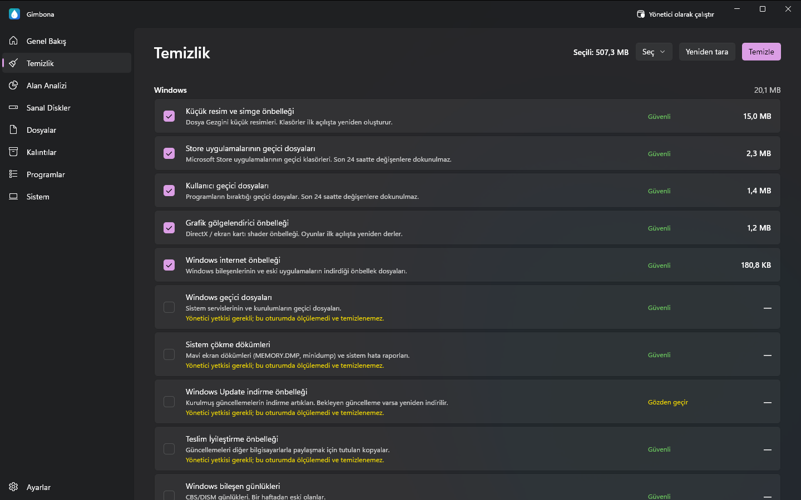
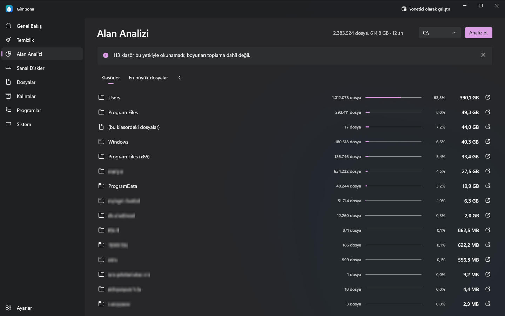
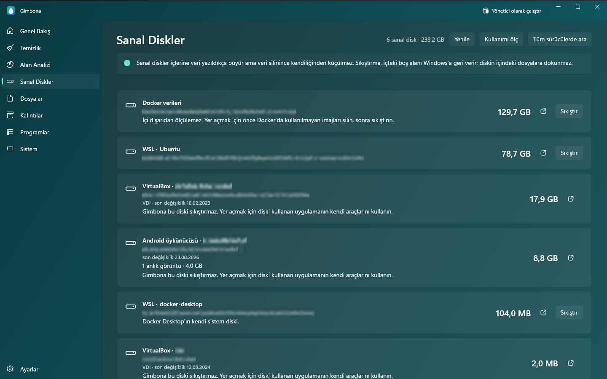

Windows için disk temizleme programı: C diskinde güvenle yer açın
C diski doldu mu? Gimbona diskinizi neyin doldurduğunu gösterir ve temizlemenize yardım eder: gereksiz dosyalar, geçici dosyalar, önbellekler, Windows Update artıkları, büyük ve yinelenen dosyalar, kullanılmayan programlar ve yalnızca büyüyen sanal diskler. Tarama yalnızca ölçer; siz onaylamadan hiçbir şey silinmez.
Gimbona'yı Microsoft Store'dan indirinWindows 10 ve Windows 11 için ücretsiz. Gimbona Pro isteğe bağlıdır; tek seferlik ödeme, abonelik yok.




Özellikler
- Her kalem için güvenlik düzeyiyle disk temizleme: Güvenli, Gözden geçir, İleri düzey
- Tarama yalnızca ölçer; onayınız olmadan hiçbir şey silinmez
- Windows, tarayıcı ve uygulamalar için gereksiz dosya, geçici dosya ve önbellek temizleme
- Klasöre göre disk analizi ve en büyük dosyalar
- Büyük ve eski dosya bulma
- Yinelenen dosya bulma
- Kaldırılmış programların kalıntıları
- Kurulu programlar: boyut ve son çalıştırma
- Kullanılmayan programları toplu kaldırma (Pro)
- WSL, Docker ve Hyper-V sanal disklerini sıkıştırma (Pro)
- Geliştirici ve oyun önbelleği temizliği (Pro)
- Haftalık ya da aylık otomatik temizlik (Pro)
- Windows bileşen deposu (WinSxS) ve hazırda bekletme dosyası temizliği (Pro)
- Veri toplamaz; her şey bilgisayarınızda kalır
- İngilizce, Almanca, İspanyolca, Fransızca ve Türkçe
- Koyu, açık ve turkuaz temalar
Gimbona neleri temizler
Gereksiz dosya, geçici dosya ve önbellek temizleme
Gimbona Windows geçici dosyalarını, çökme dökümlerini, küçük resim ve gölgelendirici önbelleklerini, Windows Update artıklarını; tarayıcıların (Chrome, Edge, Firefox, Brave, Opera) ve VS Code, Discord, Slack, Spotify gibi uygulamaların önbelleklerini bulur. Her kalemin ne kadar yer kapladığı ve güvenlik düzeyi görünür: Güvenli, Gözden geçir ya da İleri düzey.
Disk analizi, büyük dosya bulma ve yinelenen dosya bulma
Diskinizi hangi klasörlerin ve dosyaların doldurduğunu büyükten küçüğe görün. Kişisel klasörlerinizde büyük ve eski dosyaları, yinelenen dosyaları ve kaldırılmış programlardan kalan klasörleri arayın. Arama yalnızca listeler; seçtikleriniz Geri Dönüşüm Kutusu'na taşınır, oradan geri alabilirsiniz.
WSL, Docker ve Hyper-V disklerini küçültme (VHDX)
Sanal diskler içlerine veri yazıldıkça büyür ama veri silinince küçülmez. Gimbona WSL, Docker Desktop, Hyper-V, VirtualBox, VMware ve Android öykünücüsü disklerini boyutlarıyla listeler; Gimbona Pro ext4.vhdx ve diğer dinamik VHDX ve VHD dosyalarını sıkıştırıp içlerindeki boş alanı Windows'a geri verir. Diskin içindeki dosyalara dokunulmaz.
Kullanmadığınız programları kaldırma
Kurulu programlarınızı boyutlarıyla görün ve kaldırın. Gimbona yönetici olarak çalıştığında hangi programların 3, 6 ya da 12 aydır çalıştırılmadığını da gösterir. Programları tek tek kaldırmak ücretsizdir; Gimbona Pro birden çok programı tek seferde kaldırır. Sürücüler, çalışma zamanları ve güvenlik yazılımları listede yer almaz; yanlışlıkla kaldırılamazlar.
Önce güvenlik
Taramadan sonra yalnızca Güvenli kalemler seçili gelir; İleri düzey kalemler varsayılan olarak hiç seçilmez. Gimbona önce diskinizin sağlığına bakar: Windows sürücünün onarım gerektirdiğini bildiriyorsa temizlik yapılmaz. Verilerinizi toplamaz ve hiçbir yere göndermez.
Sorular ve yanıtlar
C diski doldu, neyi güvenle silebilirim?
Gimbona'nın Güvenli olarak işaretlediği kalemlerle başlayın: geçici dosyalar, önbellekler, çökme dökümleri ve Windows Update artıkları. Windows ve uygulamalarınız bunları gerektiğinde yeniden oluşturur. Tarama, hiçbir şey silinmeden önce her kalemin ne kadar yer açacağını gösterir.
Geçici dosyaları ve önbellekleri silmek güvenli mi?
Güvenli olarak işaretlenen kalemler için evet; uygulamalar bunları yeniden oluşturur, en fazla ilk açılış biraz yavaşlar. Gözden geçir kalemlerini silmek de güvenlidir ama bir şeyin yeniden indirilmesi ya da derlenmesi gerekir. İleri düzey kalemler ne olduklarını bilenler içindir.
Dosya sildiğim halde WSL ya da Docker diski (ext4.vhdx) neden küçülmüyor?
VHDX dosyası veri yazıldıkça büyür ama veri silinince küçülmez. Diski sıkıştırmak bu boş alanı Windows'a geri verir. Gimbona bir WSL diskinden ne kadar yer kazanılabileceğini gösterir, Gimbona Pro da diski sıkıştırır; işlem sırasında WSL kapatılır ve Gimbona bunu başlamadan önce size bildirir.
Gimbona kendiliğinden bir şey siler mi?
Hayır. Tarama yalnızca ölçer, temizlik yalnızca siz onaylayınca başlar. Otomatik temizlik isteğe bağlı bir Pro ayarıdır; varsayılan olarak kapalıdır ve yalnızca Güvenli kalemleri temizler.
Gimbona ücretsiz mi?
Evet. Disk analizi ile Windows, tarayıcı ve uygulama dosyalarının temizliği ücretsizdir. Gimbona Pro sanal disk sıkıştırma, geliştirici ve oyun önbellekleri, toplu kaldırma ve otomatik temizlik ekler; tek seferlik ödeme, abonelik yok.
Gimbona verilerimi bir yere gönderiyor mu?
Hayır. Tarama ve temizlik yalnızca bilgisayarınızda yapılır. Gimbona'da analiz, telemetri ya da reklam yoktur.